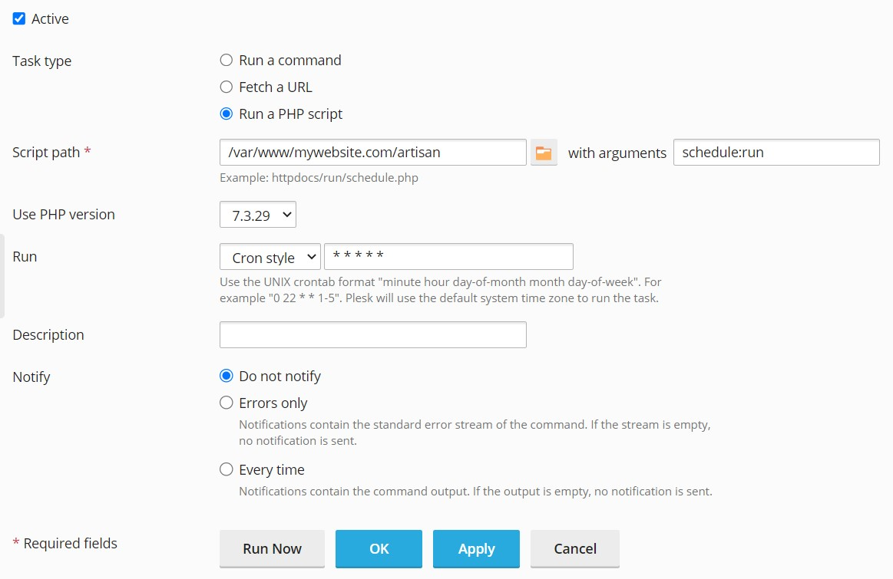

Crypto Trading Competitions
System requirements
Installation
Step 1
Download the application zip package from CodeCanyon and log in to cPanel (or other control panel).
Step 2
Open File Manager, upload the downloaded zip package to public_html folder (web root folder of your domain or subdomain), right click on the archive and choose Extract.

Step 3
Open MySQL Databases page, create a new MySQL database, create a new user and add the user to the database selecting All privileges like this:

Step 4
Run the application installation script by accessing the following URL in a web browser: http://mywebsite.com/install.php (substitute mywebsite.com with your actual domain name). Follow the on-screen setup instructions to complete the installation.
Step 5
Open Cron Jobs page and add a new cron (scheduled) job to your server. The cron job parameters are provided after successful installation of the application and on the Backend » Maintenance page.
In cPanel the cron job should look like this:
In Plesk the cron job should look like this:
Step 6
Log in as admin and go to Backend » Settings » Email. Enter the credentials of the SMTP server that will deliver emails sent by the application.
Step 1
Install and configure a LAMP stack (Linux, Apache, MySQL, PHP). If your server comes with Ubuntu OS you can use this guide, for other operating systems find the corresponding manual.
Step 2
Create a new MySQL database, create a new user and add the user to the database. You can do so by logging in to MySQL as root and running the following commands:
Step 3
Download the application zip package from CodeCanyon, upload it to the web root folder of your domain or subdomain and unzip.
Step 4
Run the application installation script by accessing the following URL in a web browser: http://mywebsite.com/install.php (substitute mywebsite.com with your actual domain name). Follow the on-screen setup instructions to complete the installation.
Step 5
Add a new cron (scheduled) job to your server. The cron job parameters are provided after successful installation of the application and on the Backend » Maintenance page. The cron job can be added by executing crontab -e and pasting the command.
Step 6
Log in as admin and go to Backend » Settings » Email. Enter the credentials of the SMTP server that will deliver emails sent by the application.
Frequently Asked Questions
Once the app is up and running you have everything in place to run trading competitions. Log in to the website as admin, go to the admin panel and create a new competition. Customize competition parameters (such as starting balance, lot size, leverage etc) as needed. Users who sign up to the website will then be able to join this competition and place trades.
If you like to use a currency other than USD you can choose it in the app settings (navigate to Settings page in the backend). Please note that in this case you will also need to obtain a FREE openexchangerates.org API key by signing up at https://openexchangerates.org/signup/free. After you got the key save it in the settings ("Integration" tab).
You can change translation strings for any language by editing translation files at resources/lang/LANGUAGE_CODE.
The application settings will remain the same, but please note that if you changed any of the application files you will have to apply these changes again.
Bots are users that can trade on their own without user intervention. To create bots open the Users page in the backend, input number of bots and click "Create bots". After bots are created you can adjust their names and add avatar pictures, so they appear more like regular users. Then on the Competitions page you can add any number of bots to a particular competition (they will be randomly selected from the list of available bots).
If there are bots in a competition then every 5 minutes the app will wake them up. Every bot will open a random number of trades (min and max number of trades that can be open during each cycle can be specified in the app settings). The asset to trade will be randomly picked up from the list of top N assets (where N is a number, which can be specified in the settings). Trade direction and volume will also be randomly generated.
Every bot will also check if there are any previously open trades whose life time exceeds the min trade life time (specified in the settings). If so the bot will close a random number of such trades (min and max number of trades that can be closed during each cycle can be specified in the app settings).
Chat uses Pusher to function. In order to enable chat functionality you need to create a free account at pusher.com, create a new channels app and obtain its credentials (such as app ID, key, secret and cluster). After that input these credentials in the application settings in the backend (under "Integration" tab). The chat should then start working automatically.
Amongst other things please make sure to fill in App domains field under Settings Basic and Valid OAuth Redirect URIs field under Facebook login Settings. Example:

The paths should be the same except that you need to specify your own domain.
Please make sure to enable Request email addresses from users checkbox under Permissions.
Suppose you want to add a new page called "About us", which is accessible at http://yourwebsite/page/about-us (please note that all static pages URLs should include "page" slug). To do so create a new template file named about-us-udf.php (please note that "-udf" suffix should always be present in the template file name for every custom page you add) inside resources/views/pages/frontend/static folder and add necessary HTML markup / content.
Using the same technique you can override default Privacy Policy and Terms of Use pages templates by creating resources/views/pages/frontend/static/privacy-policy-udf.blade.php or resources/views/pages/frontend/static/terms-of-use-udf.blade.php template files respectively. Do not modify the original privacy-policy.blade.php or terms-of-use.blade.php files to be able to keep your custom changes after future application updates.
Credits
Support
Please note that support can only be provided during the application support period. 6 months of free support are provided with your purchase. Should you need support outside of this period you will need to renew it. How to extend / renew the app support?
To get technical support please submit a new ticket at https://support.financialplugins.com. If you see an application error please do the following:
- Enable Debug mode (Backend » Settings » Developer)1
- Repeat the error
- Make a screenshot of the error
- Check the browser console and make a screenshot if there are any errors
- Provide the above information along with the application error log (can be found in storage/logs folder)
- Provide steps to reproduce the error
In case the issue is difficult to trace our support team can request SSH / cPanel access to your server and / or website admin access.
1 — If you don't have access to backend please edit .env configuration file (located in the web root folder of your domain) and set the following variables:
APP_DEBUG=true APP_LOG_LEVEL=debug